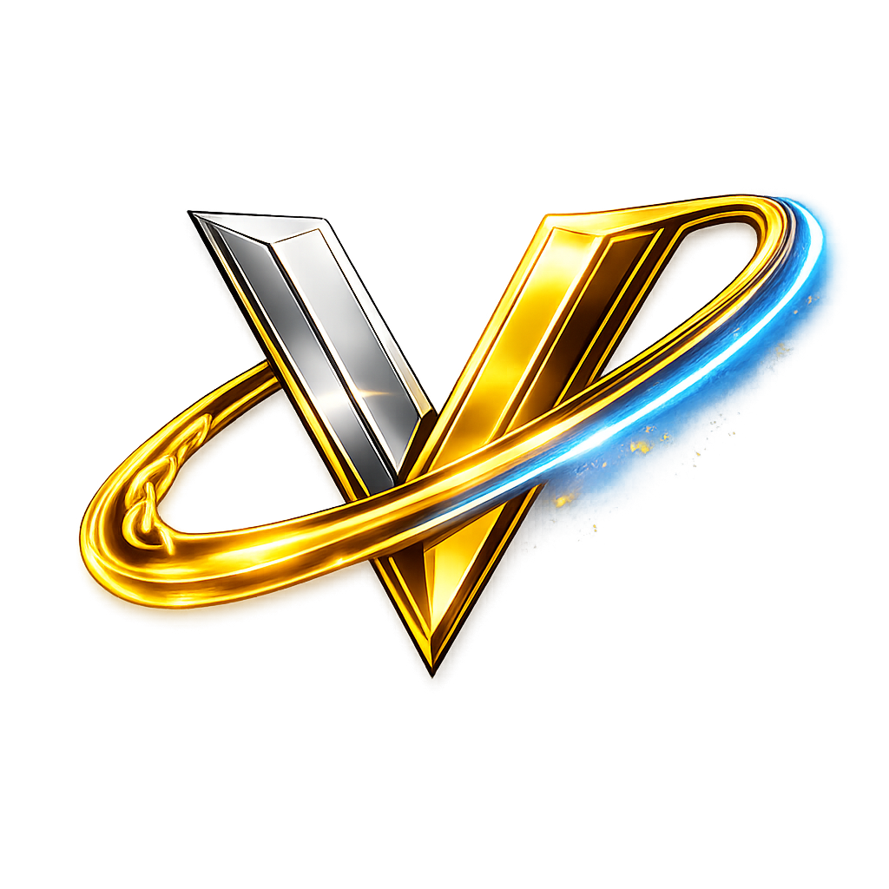

Exchange Infrastructure
Built to support exchange-facing infrastructure, connected utility, platform expansion, and a stronger operational system identity.
View System Direction
VENX is designed as a unified intelligence layer — bridging traditional web infrastructure, Web3 systems, and AI-driven execution. Built to support exchange infrastructure, power ecosystem logic, and evolve into its own smart contract-based system.
VENX is not designed as a standalone token layer. It operates as a structured intelligence system across Ven Aayat, exchange infrastructure, and future smart contract-driven ecosystem expansion.
Built to support exchange-facing infrastructure, connected utility, platform expansion, and a stronger operational system identity.
View System DirectionA system-led utility layer designed for participation, access, ecosystem services, and future native smart contract-driven expansion.
Explore Token UtilityStructured intelligence, onboarding, education, and future AI-assisted ecosystem activation through connected knowledge systems.
Read VisionVENX is designed to strengthen the internal architecture of the Ven Aayat ecosystem — not through speculation, but through structured utility, system-level intelligence, and long-term execution capability.
Connects traditional web infrastructure with Web3 systems and future on-chain logic.
Designed to support exchange infrastructure, internal utility, and evolving system operations.
Built with direction toward its own smart contract-based operational ecosystem over time.
Explore the token utility, allocation structure, and the evolving tokenomics layer behind the broader VENX system.